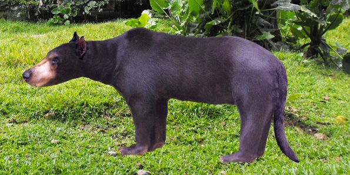

|
« Un herbivore a tout le temps peur, un carnivore a tout le temps faim…»
Les Amphicyons en marche...

Les amphicyonidés sont des animaux aux caractères intermédiaires entre les chiens et les ours. C’est pourquoi on les appelle parfois les chiens-ours. Toutefois, la famille constitue une lignée de carnivores disparus, distincte de ces autres groupes.
  Les amphicyonidés sont les carnivores les plus emblématiques des faluns d’Anjou Touraine. Ils regroupent des carnivores de taille moyenne à gigantesque avec un nombre important de genres et d’espèces. C’est sur la base de la taille que j’ai été amené à attribuer les incisives ci-contre à des amphicyonidés. De manière synthétique, les plus gros carnivores de ce début du miocène appartiennent soit à la famille des Hemicyonidés soit plus probablement à celle des Amphicyonidés. Les amphicyonidés sont les carnivores les plus emblématiques des faluns d’Anjou Touraine. Ils regroupent des carnivores de taille moyenne à gigantesque avec un nombre important de genres et d’espèces. C’est sur la base de la taille que j’ai été amené à attribuer les incisives ci-contre à des amphicyonidés. De manière synthétique, les plus gros carnivores de ce début du miocène appartiennent soit à la famille des Hemicyonidés soit plus probablement à celle des Amphicyonidés.
Les incisives d’hémicyonidés sont assez caractéristiques au contraire des dents montrées ici. Et donc une incisive simple avec un bulbe sur la face postérieure indique plutôt un amphicyonidé. Seule la I3 supérieure qui ressemble à une canine trapue pourrait être confondue avec une I3 d’hémicyon.
La dent de gauche est bien conservée sans usure fonctionnelle. Elle a dû appartenir à un amphicyonidé d’assez grosse taille. Les 2 autres montrent des usures fonctionnelles importantes par des mouvements d’occlusion. Mais leur taille révèle qu’elles ont appartenu à des carnivores encore plus gros. C’est pourquoi, ces dents ont été attribuées au genre amphicyon.
Il est étonnant de voir à quel point ces dents antérieures de carnivores sont exposées à l’usure fonctionnelle.

Les amphicyons ont une formule dentaire assez complète (primitive…) pour des carnivores qui rappelle celle des canidés. Les prémolaires et les premières molaires tranchantes pouvaient découper les chairs, les molaires arrière émoussées, pouvaient broyer les os.
Comme beaucoup de carnivores, on pense que les Amphicyons devaient avoir un régime un peu omnivore pour compenser les mauvaises fortunes de chasse. L'appareil masticateur est bien disposé par ce régime mixte. Reste que les Amphicyonidés étaient les carnivores tout en haut de la chaîne alimentaire. Megamphicyon Giganteus a été le roi du miocène MN5.
Le casse-tête des paléontologues
Jusqu’au début des années 1960, le groupe Amphicyon a été le fourre-tout de toutes les espèces de carnivores du miocène de la taille d’un chien moyen à celle d’un grizzly.
De fait, les plus petits amphicyonidés ont l’aspect général d’un chien allongé et les plus gros de ces animaux (Amphicyon (Megamphicyon) Giganteus, d’un poids de presque 400 kg présentent l’aspect général d’un ours à cause de leur musculature prodigieuse.
Au début, on a estimé que les Amphicyons étaient sujets à des variations de taille individuelles, au même titre que les chiens. En effet, il est difficile de s’imaginer qu’un chiwawa et qu’un berger danois font bel et bien partie de la même espèce.
A cela on a ajouté la possibilité d’un dimorphisme sexuel qui aurait pu être expliquer des différences de taille entre les restes retrouvés.
A firce d'y regarder de plus près, les paléontologues ont fini par faire un tri, pour finalement établir une arborescence assez foisonnante au point qu’il est difficile à un amateur de déterminer dans quelle catégorie classer les fossiles.
De manière synthétique, au moins 7 genres d’amphicyonidés ont été répertoriés dans les faluns :
- Amphicyon
- Cynelos
- Janvierocyon
- Pseudarctos
- Pseudocyon
- Thaumastocyon
- Ictyocyon
Ces genres ne se sont pas tous côtoyés parce que certains avaient disparu avant l’apparition des autres.
|